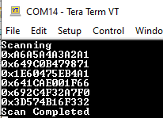

3.1.1.2 BLE Legacy Scan
Getting Started with Central Building Blocks
Introduction
This section helps users to enable the BLE Scanning on the WBZ451 Curiosity board using MCC. BLE scanning is utilized to detect devices that are in advertising mode. Within BLE protocols, the process is initiated by either a central device or an observer engaging in scanning activities.
Users of this document can choose to just run the precompiled Application Example hex file on the WBZ451 Curiosity Board and experience the demo or can go through the steps involved in developing this application from scratch
Recommendation is to follow the examples in order, by learning the basic concepts first and then progressing to the more advanced topics.
Recommended Reading
Hardware Requirement
| Tool | Qty |
|---|---|
| WBZ451 Curiosity Board | 1 |
| Micro USB cable | 1 |
SDK Setup
Software
Smartphone App
None
Programming the Precompiled
.hex File or Application Example
Programming the .hex file using MPLAB X IPE
-
Precompiled
.hexfile is located in the path “<Harmony Content Path>\wireless_apps_pic32cxbz2_wbz45\apps\ble\building_blocks\central\legacy_scan\hex” folder -
For more details on the steps, go to Programming A Device.Note: Users must choose the correct Device and Tool information.
Programming the Application using MPLAB X IDE
-
Follow steps mentioned in of Running a Precompiled Example section.
-
Open and program the application example
legacy_scan.Xlocated in "<Harmony Content Path>\wireless_apps_pic32cxbz2_wbz45\apps\ble\building_blocks\central\legacy_scan\firmware" using MPLAB X IDE
For more details on finding the Harmony content path, refer to Installing the MCC Plugin section.
Demo Description
This application example enables users to do passive scanning. After programming the application example, on Reset user will be able to see the beginning of scan operation, The Bluetooth addresses of devices will be scanned for the next 10 seconds. After 10 seconds the scanning operation will complete.
Testing
- Connect the WBZ451 Curiosity board to PC, program the precompiled hex file or application example as mentioned.
- Open TeraTerm and configure as mentioned below:Terminal Settings
- Baud Rate/Speed – 115200 (as configured in SERCOM configuration)
- Parity – None
- Data Bits – 8
- Stop Bits – 1
- Flow Control – None
- Reset the board, upon Reset, “Scanning” message is displayed on the TeraTerm.
- Once scan operation has begun user will be able to display all the Bluetooth
addresses that are advertising on channel 37, 38 and 39.
Figure 3-10. BLE Scanning TeraTerm  - After 10 secs "Scan Completed" message is sent out.
Users can use another WBZ451 Curiosity Board configured as BLE Advertiser set the address and scan
Developing this Application from Scratch Using MCC
-
Create a new MCC Harmony Project. For more details, refer to 2.5 Creating a New MCC Harmony Project section.
Import component configuration: This step helps users to setup the basic components and configuration required to develop this application. The imported file is of format
.mc3and is located in the path"<Harmony Content Path>\wireless_apps_pic32cxbz2_wbz45\apps\ble\building_blocks\central\legacy_scan\firmware\legacy_scan.X".For more details on importing the component configuration , refer to15.3 Importing Existing App Example Configuration
-
Accept dependencies or satisfiers, select Yes.
Verify if the project graph window has all the expected configuration , as illustrated in the following figure
Figure 3-11. Project Graph 
Verifying the Scan Configuration
- Click on the BLE Stack component in project graph, to open component configuration and configure as illustrated in the following figure.
Figure 3-12. BLE Stack Configuration 
Generating a Code
For more details on code generation, refer to 15.2 MPLAB Code Configurator(MCC) Code Generation.
Files and Routines Automatically generated by the MCC
Initialization.capp_ble.capp_ble.c| Source Files | Usage |
|---|---|
app.c | Application State machine, includes calls for Initialization of all BLE stack (GAP,GATT, SMP, L2CAP) related component configurations |
app_ble\app_ble.c | Source Code for the BLE stack related component configurations, code related to function
calls from app.c |
app_ble\app_ble_handler.c | All GAP, GATT, SMP and L2CAP event handlers |
Note:app.cis autogenerated and has a state machine based application code sample, users can use this template to develop their application
Header Files
ble_gap.h: This header file contains BLE GAP functions and is automatically included in theapp.cfile
Function Calls
MCC generates and adds the code to initialize the BLE Stack GAP, GATT, L2CAP and SMP in
APP_BleStackInit() function
APP_BleStackInit()is the API that will be called inside the applications initialization stateAPP_STATE_INITinapp.c
User Application Development
Include
User action is required as mentioned here
definitions.hin all the files where UART will be used to print debug informationNote:definitions.his not specific to just UART peripheral, instead it must be included in all application source files where peripheral functionality will be exercised
Start Scanning
// Scanning Enabled
BLE_GAP_SetScanningEnable(true, BLE_GAP_SCAN_FD_ENABLE, BLE_GAP_SCAN_MODE_OBSERVER, 100);
// Output the status string to UART
SERCOM0_USART_Write((uint8_t *)"Scanning \r\n", 11);APP_STATE_INIT in
app.c. Scan duration is 10 secondsapp.cScan Results
BLE_GAP_EVT_ADV_REPORTevent is generated upon finding advertisements on legacy channels
// code snippet to print scan results
uint8_t scanAddr[12]; //var to store ASCII address
BLE_GAP_EvtAdvReport_T scanResults;
scanResults.addr = p_event->eventField.evtAdvReport.addr;
APP_HexToAscii(6, scanResults.addr.addr, scanAddr);
SERCOM0_USART_Write((uint8_t *)"0x", 2);
SERCOM0_USART_Write((uint8_t *)scanAddr, 12);
SERCOM0_USART_Write((uint8_t *)"\r\n", 2);// function to convert HEX to ASCII
static void APP_HexToAscii(uint8_t byteNum, uint8_t *p_hex, uint8_t *p_ascii)
{
uint8_t i, j, c;
uint8_t digitNum = byteNum * 2;
if (p_hex == NULL || p_ascii == NULL)
return;
for (i = 0; i < digitNum; i++)
{
j = i / 2;
c = p_hex[j] & 0x0F;
if (c >= 0x00 && c <= 0x09)
{
p_ascii[digitNum - i - 1] = c + 0x30;
}
else if (c >= 0x0A && c <= 0x0F)
{
p_ascii[digitNum - i - 1] = c - 0x0A + 'A';
}
p_hex[j] /= 16;
}
}Add the above code to the appropriate sections within the
app_ble_handler.c
app_ble_handler.cScan Timeout Event
- In
app_ble_handler.c,BLE_GAP_EVT_SCAN_TIMEOUTevent is generated when BLE Scan duration expires.- Add the following code, inside
BLE_GAP_EVT_SCAN_TIMEOUTcase.SERCOM0_USART_Write((uint8_t *)”Scan Completed \r\n”, 17);
Figure 3-19. app_ble_handler.c - Add the following code, inside
Users can exercise various other BLE Advertisement functionalities by using BLE Stack API
For more details, refer to BLE Connection.